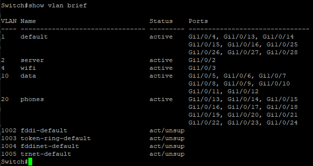
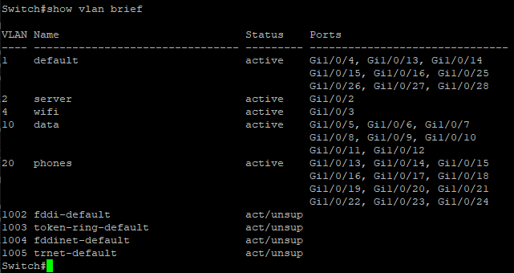

Configuration du switch
Nous avons commencé par configurer le switch que nous allons utiliser pour notre réseau. Nous avons donc configuré les ports ainsi que les VLANs.
Nous avons commencé par configurer le switch que nous allons utiliser pour notre réseau. Nous avons donc configuré les ports ainsi que les VLANs.
Nous avons ensuite configuré le routeur que nous allons utiliser pour notre réseau. Nous avons donc configuré les sous-interfaces ainsi que les access-list pour le NAT. Les ACL prennent en compte tous les sous-réseaux de la salle de TP